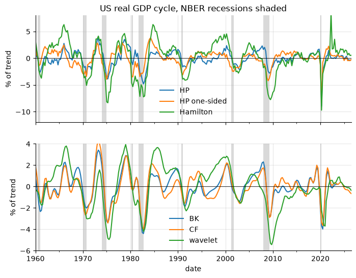
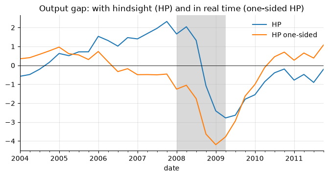

6. Detrending and filtering: trend and cycle#
Splitting a series into a slow-moving trend and a cycle is the first step of most business-cycle work (output gaps, credit gaps, stylized facts). There is no unique right answer: every filter embeds a definition of “trend”, and the cycles they produce can differ a lot, especially at the end of the sample, which is usually the part you care about.
Several recipes below are Python ports of functions in Filippo Ferroni’s
Empirical Macro Toolbox (MATLAB):
polydet, polydet_break, one_sided_hpfilter_serial, hamfilter,
BNuniv, wavefilter and shade.
import numpy as np
import pandas as pd
import matplotlib.pyplot as plt
import statsmodels.api as sm
from econts import load
y = 100 * np.log(load("GDPC1")).asfreq("QS") # log real GDP x 100
rec = load("USRECQ").asfreq("QS").reindex(y.index)
def shade_recessions(ax, rec=rec):
"""Shade NBER recession quarters (EMT's `shade`; chapter 10 generalizes it)."""
on = rec.fillna(0).astype(bool)
starts = on.index[on & ~on.shift(1, fill_value=False)]
ends = on.index[on & ~on.shift(-1, fill_value=False)]
for s, e in zip(starts, ends):
ax.axvspan(s, e + pd.offsets.QuarterEnd(0), color="0.85", lw=0, zorder=0)
In your projects
The same recipe is in the econts toolkit:
from econts.dummies import shade
6.1. Deterministic trends#
Fit a polynomial in time; the residual is the cycle. A break lets the trend change level and slope at a known date (e.g. a productivity slowdown).
def poly_detrend(y: pd.Series, order: int = 1, break_at=None):
"""Polynomial trend, optionally a separate polynomial after `break_at`."""
t = np.arange(len(y), dtype=float)
X = np.vander(t, order + 1)
if break_at is not None:
after = (y.index >= pd.Timestamp(break_at)).astype(float)[:, None]
X = np.hstack([X * (1 - after), X * after])
beta, *_ = np.linalg.lstsq(X, y.to_numpy(), rcond=None)
trend = pd.Series(X @ beta, index=y.index)
return y - trend, trend
cyc_lin, _ = poly_detrend(y, order=1)
cyc_quad, _ = poly_detrend(y, order=2)
cyc_brk, _ = poly_detrend(y, order=1, break_at="1973-10-01")
In your projects
The same recipe is in the econts toolkit:
from econts.filters import poly_detrend
Deterministic trends assume the trend never moves after a shock. If GDP has a unit root, the “cycle” inherits it and wanders for decades.
6.2. First differences#
The growth rate is a valid stationary transformation, but it is not a cycle in levels: it peaks in the middle of a recovery, not at the top of the boom.
growth = y.diff()
6.3. Hodrick–Prescott filter#
HP picks the trend \(\tau\) that minimizes \(\sum_t (y_t-\tau_t)^2 + \lambda \sum_t (\Delta^2 \tau_t)^2\).
Frequency |
\(\lambda\) (Ravn–Uhlig, 2002) |
|---|---|
Annual |
6.25 (100 is the older convention) |
Quarterly |
1600 |
Monthly |
129600 (14400 is the older convention) |
Basel III credit-to-GDP gap (quarterly) |
400000, one-sided |
cyc_hp, trend_hp = sm.tsa.filters.hpfilter(y, lamb=1600)
6.3.1. One-sided HP#
The two-sided filter uses future data. At the end of the sample, the trend
is pulled towards the last observations and the gap shrinks toward zero.
The one-sided version re-runs HP on each expanding sample and keeps only the
last point, so every value uses only data up to that date
(EMT one_sided_hpfilter_serial, by Alexander Meyer-Gohde).
def hp_one_sided(y: pd.Series, lamb: float = 1600, min_obs: int = 12):
"""One-sided HP: the trend at t is the end point of HP on y[:t+1]."""
trend = pd.Series(np.nan, index=y.index)
for t in range(min_obs, len(y) + 1):
trend.iloc[t - 1] = sm.tsa.filters.hpfilter(y.iloc[:t], lamb=lamb)[1].iloc[-1]
return y - trend, trend
cyc_hp1, _ = hp_one_sided(y)
In your projects
The same recipe is in the econts toolkit:
from econts.filters import hp, hp_one_sided
The one-sided trend is the Kalman-filter estimate of the HP state-space model (Stock and Watson, 1999; see the UC section below), which is how the Basel credit-to-GDP gap is computed in practice.
6.4. Hamilton (2018) regression filter#
Hamilton argues HP creates spurious dynamics and proposes a regression: the
cycle is the error of forecasting \(y_{t+h}\) from its values at \(t, t-1,
\dots, t-p+1\). For quarterly data, \(h = 8\) (two years) and \(p = 4\)
(EMT hamfilter).
def hamilton_filter(y: pd.Series, h: int = 8, p: int = 4):
"""Cycle = residual of y_t on a constant and y_{t-h}, ..., y_{t-h-p+1}."""
X = pd.concat({f"y(t-{h + j})": y.shift(h + j) for j in range(p)}, axis=1)
d = pd.concat([y.rename("y"), X], axis=1).dropna()
fit = sm.OLS(d["y"], sm.add_constant(d.drop(columns="y"))).fit()
return fit.resid.reindex(y.index), fit.fittedvalues.reindex(y.index)
cyc_ham, _ = hamilton_filter(y)
cyc_rw8 = y - y.shift(8) # Hamilton's "random walk" special case
In your projects
The same recipe is in the econts toolkit:
from econts.filters import hamilton_filter
The first \(h+p-1\) observations are lost. Hamilton’s choice is two years ahead with a year of lags: \(h = 24, p = 12\) for monthly data and \(h = 2, p = 1\) for annual data.
6.5. Band-pass filters: Baxter–King and Christiano–Fitzgerald#
Band-pass filters keep cycles with periods between low and high
(6 and 32 quarters, after Burns and Mitchell). Baxter–King (BK) is a
symmetric moving average and loses K observations at each end;
Christiano–Fitzgerald (CF) is asymmetric and uses the whole sample.
cyc_bk = sm.tsa.filters.bkfilter(y, low=6, high=32, K=12) # loses 12 + 12 obs
cyc_cf, _ = sm.tsa.filters.cffilter(y, low=6, high=32, drift=True)
6.6. Beveridge–Nelson decomposition#
The BN trend is the long-run forecast of the series, net of drift:
\(\tau_t = y_t + \sum_{h\ge1} E_t[\Delta y_{t+h} - \mu]\). With an AR(\(p\)) for
\(\Delta y\) in companion form \(X_t = F X_{t-1} + e_t\), the cycle is
\(c_t = -e_1' F (I-F)^{-1} X_t\) (EMT BNuniv).
def beveridge_nelson(y: pd.Series, p: int = 4):
"""Univariate BN decomposition with an AR(p) for the first difference."""
dy = y.diff().dropna()
x = dy - dy.mean()
phi = sm.tsa.AutoReg(x, lags=p, trend="n").fit().params.to_numpy()
F = np.zeros((p, p))
F[0] = phi
F[1:, :-1] = np.eye(p - 1)
X = pd.concat([x.shift(j) for j in range(p)], axis=1) # [x_t, ..., x_{t-p+1}]
long_run = F @ np.linalg.inv(np.eye(p) - F)
cycle = -(X @ long_run[0]).where(X.notna().all(axis=1))
return cycle.reindex(y.index), (y - cycle)
cyc_bn, _ = beveridge_nelson(y)
In your projects
The same recipe is in the econts toolkit:
from econts.filters import beveridge_nelson
The BN cycle of US GDP from a low-order AR is small and noisy: positive growth shocks raise the trend more than one for one. Kamber, Morley and Wong (2018) fix this by imposing a low signal-to-noise ratio (the “BN filter”).
6.7. Bivariate Beveridge–Nelson and Blanchard–Quah#
A second variable that moves with the cycle, such as the unemployment rate, sharpens the split (Evans and Reichlin, 1994). Fit a VAR to output growth and unemployment, then:
multivariate BN: the trend is the long-run forecast of output from the VAR, so the cycle is \(c_t = -e_1' F (I-F)^{-1} Z_t\) with \(F\) the companion matrix and \(Z_t\) the stacked, demeaned state;
Blanchard–Quah (1989): identify two shocks by assuming only one of them (the “supply” shock) moves output in the long run. The cycle is the cumulated contribution of the other (“demand”) shock.
Both come from one VAR (EMT BNBQbiv, by Fabio Canova). Eight lags, as in
Blanchard and Quah, on 1948–2019:
u_q = load("UNRATE").resample("QS").mean()
X = pd.DataFrame({"dy": y.diff(), "u": u_q}).loc["1948-04-01":"2019"].dropna()
p, k = 8, 2
var2 = sm.tsa.VAR(X).fit(p)
# multivariate BN
F = np.zeros((k * p, k * p))
F[:k] = np.hstack(list(var2.coefs))
F[k:, :-k] = np.eye(k * (p - 1))
Z = pd.concat([(X - X.mean()).shift(j) for j in range(p)], axis=1)
long_run = F @ np.linalg.inv(np.eye(k * p) - F)
cyc_bn2 = -(Z @ long_run[0]).where(Z.notna().all(axis=1))
# Blanchard-Quah: long-run impact matrix lower triangular
A1 = np.eye(k) - var2.coefs.sum(axis=0)
A1_inv = np.linalg.inv(A1)
B0 = A1 @ np.linalg.cholesky(A1_inv @ var2.sigma_u @ A1_inv.T) # u_t = B0 e_t
B0[:, 1] *= np.sign(B0[0, 1]) # demand shock raises output on impact
e = var2.resid.to_numpy() @ np.linalg.inv(B0).T
theta = var2.ma_rep(len(e) - 1) @ B0 # structural MA coefficients
demand = [np.einsum("j,j->", theta[: t + 1, 0, 1], e[t::-1, 1]) for t in range(len(e))]
cyc_bq = pd.Series(np.cumsum(demand), index=var2.resid.index)
bn_compare = pd.DataFrame(
{"BN univariate": cyc_bn, "BN bivariate": cyc_bn2, "BQ": cyc_bq}
).dropna()
print(bn_compare.groupby(rec.reindex(bn_compare.index)).mean().round(2))
BN univariate BN bivariate BQ
USRECQ
0.0 -0.02 0.11 0.18
1.0 0.11 -0.39 -0.80
In your projects
The same recipe is in the econts toolkit:
from econts.filters import bn_bq_bivariate
cycles = bn_bq_bivariate(y, u_q, p=8) # columns: bn, bq
The table shows the average cycle in expansions (0) and NBER recessions (1). The univariate BN cycle has the wrong sign: it is positive in recessions, because with output alone a fall in growth signals a lower trend. Adding unemployment fixes it: both bivariate cycles are negative in recessions, and BQ’s is the larger.
6.8. Haar wavelet filter#
Lubik, Matthes and Verona (2019) split a series with the Haar wavelet into
components \(D_j\) with periods between \(2^j\) and \(2^{j+1}\) quarters. Each
component is the difference between two adjacent moving averages of length
\(2^{j-1}\), so the filter is one-sided (EMT wavefilter).
def haar_components(y: pd.Series, levels: int = 5) -> pd.DataFrame:
"""Haar wavelet details D1..D_levels; D_j has periods 2^j to 2^(j+1)."""
out = {}
for j in range(1, levels + 1):
w = 2 ** (j - 1)
m = y.rolling(w).mean()
out[f"D{j}"] = (m - m.shift(w)) / 2
return pd.DataFrame(out)
D = haar_components(cyc_brk) # on the linearly detrended series
cyc_wav = D["D3"] + D["D4"] # 8-32 quarter business cycle
trend_wav = y - D[["D1", "D2", "D3", "D4"]].sum(axis=1)
In your projects
The same recipe is in the econts toolkit:
from econts.filters import haar_components, haar_cycle
Remove the drift first. On a trending series each detail picks up the growth rate: a linear trend with slope \(g\) adds \(g\,2^{j-2}\) to \(D_j\), about 4.5 pp to \(D_3 + D_4\) for US GDP. Applying the filter to the series minus a (broken) linear trend removes this; the details of a linear trend are zero.
6.9. Unobserved components models#
A UC model writes the series as a sum of unobserved trend and cycle processes and estimates them with the Kalman filter. HP is a special case: an integrated random-walk (“smooth”) trend plus a white-noise cycle, with the variance ratio fixed at \(1/\lambda\). The Kalman smoother gives the two-sided HP trend and the Kalman filter gives the one-sided one:
hp_uc = sm.tsa.UnobservedComponents(y, level="smooth trend")
hp_res = hp_uc.smooth([1.0, 1 / 1600]) # sigma2.irregular, sigma2.trend
print("smoother vs HP:", (hp_res.level.smoothed - trend_hp).abs().max().round(4))
print(
"filter vs one-sided HP:",
(y - hp_res.level.filtered - cyc_hp1).iloc[20:].abs().max().round(4),
)
smoother vs HP: 0.0002
filter vs one-sided HP: 0.0
The point of a UC model is to estimate the variances instead of fixing
them, e.g. Clark’s (1987) local linear trend plus an AR(2) cycle (EMT uc1_
is a Bayesian version). On US GDP alone this runs into the pile-up
problem: maximum likelihood sets the trend variances to zero, and the
“trend” collapses to a straight line.
clark = sm.tsa.UnobservedComponents(
y[:"2019"], level="local linear trend", autoregressive=2
).fit(disp=False, maxiter=1000)
print(clark.params.round(3)) # sigma2.level and sigma2.trend ~ 0
sigma2.irregular 0.069
sigma2.level 0.000
sigma2.trend 0.000
sigma2.ar 0.490
ar.L1 1.489
ar.L2 -0.536
dtype: float64
Univariate UC decompositions of GDP are weakly identified. Add information (Clark, 1989, adds unemployment through Okun’s law; Phillips-curve models add inflation), use priors (Bayesian UC), or fix the signal-to-noise ratio as HP does.
6.10. Comparing the cycles#
cycles = pd.DataFrame(
{
"linear+break": cyc_brk,
"HP": cyc_hp,
"HP one-sided": cyc_hp1,
"Hamilton": cyc_ham,
"BK": cyc_bk,
"CF": cyc_cf,
"BN": cyc_bn,
"wavelet": cyc_wav,
"BN bivariate": cyc_bn2,
"BQ": cyc_bq,
}
)
sample = cycles.loc["1960":"2019"]
stats = pd.DataFrame(
{
"std": sample.std(),
"AR(1)": sample.apply(lambda c: c.autocorr()),
"corr with HP": sample.corrwith(sample["HP"]),
}
)
print(stats.round(2))
std AR(1) corr with HP
linear+break 4.36 0.98 0.44
HP 1.44 0.87 1.00
HP one-sided 1.51 0.90 0.50
Hamilton 3.08 0.93 0.74
BK 1.35 0.93 0.96
CF 1.38 0.92 0.87
BN 0.16 0.38 0.19
wavelet 2.03 0.97 0.70
BN bivariate 1.36 0.87 0.22
BQ 1.00 0.93 0.47
fig, axes = plt.subplots(2, 1, figsize=(8, 6), sharex=True)
cycles.loc["1960":, ["HP", "HP one-sided", "Hamilton"]].plot(ax=axes[0])
cycles.loc["1960":, ["BK", "CF", "wavelet"]].plot(ax=axes[1])
for ax in axes:
shade_recessions(ax)
ax.axhline(0, color="k", lw=0.6)
ax.set_ylabel("% of trend")
axes[0].set_ylim(-12, 8)
axes[1].set_ylim(-6, 4)
axes[0].set_title("US real GDP cycle, NBER recessions shaded")
Text(0.5, 1.0, 'US real GDP cycle, NBER recessions shaded')

The one-sided HP correlates only 0.5 with the two-sided one: the same filter tells a different story in real time. In 2007, the one-sided HP said output was slightly below trend; with hindsight, the two-sided filter puts it about 2% above. And this understates the problem: true real-time estimates would also use the GDP data as first published, before revisions. The wavelet cycle, also one-sided, shows the other cost: it lags turning points (see its 2009 trough in the figure above).
ax = cycles.loc["2004":"2011", ["HP", "HP one-sided"]].plot()
ax.axhline(0, color="k", lw=0.6)
shade_recessions(ax)
ax.set_title("Output gap: with hindsight (HP) and in real time (one-sided HP)")
Text(0.5, 1.0, 'Output gap: with hindsight (HP) and in real time (one-sided HP)')

6.11. Which filter?#
Purpose |
Use |
|---|---|
Stylized facts, historical description |
HP (two-sided), CF, BK; report two |
Real-time gap, early warning (credit gap) |
one-sided HP, Hamilton |
Cycle with a specific periodicity |
CF (full sample) or BK |
Structural interpretation, uncertainty bands |
UC model |
Permanent vs transitory shocks |
Beveridge–Nelson (bivariate, or the BN filter); Blanchard–Quah |
Quick, one-sided frequency split |
Haar wavelet |
6.12. Pitfalls#
All two-sided filters revise their recent values as data arrive. Compare vintages before claiming the economy is “above potential”.
The 2020 collapse dominates every regression-based filter that includes it (Hamilton, BN, UC). The Hamilton cycle also echoes it \(h\) quarters later: the 2022 spike in the figure is the 2020Q2 trough entering \(y_{t-8}\). Estimate on pre-2020 data or add outlier dummies.
Filters applied to non-logged data give cycles in levels, which grow with the series. Log first.
A filter can create cycles from white noise (Slutsky effect; Cogley and Nason, 1995, for HP). Check that the stylized fact survives other filters.
6.13. Summary#
Detrend logs × 100: the cycle is then in percent of trend.
The two-sided HP filter is fine for describing history; it is not fine in real time. Use the one-sided HP or the Hamilton filter for anything that pretends to be known at time \(t\).
Band-pass filters (BK, CF) let you choose the periodicities: 6–32 quarters is the standard business-cycle band.
Report results for more than one filter.
6.14. Exercises#
Apply the HP filter (λ = 1600) to log real GDP × 100 (
GDPC1) on 1960–2007 and on 1960–2019. How different is the 2007 output gap in the two runs, and what does this say about end-of-sample estimates?Compute the two-sided HP, one-sided HP and Hamilton cycles of Portuguese real GDP (
CLVMNACSCAB1GQPT, 1995–2019). Was output above or below trend in 2008Q1 and in 2011Q1 according to each, and which answers could a policymaker have had at the time?Extract the business-cycle component of monthly log industrial production (
INDPRO, 1960–2019) with Christiano–Fitzgerald (periods 18–96 months) and with HP (λ = 129600). Compare their standard deviations and correlation, and check which one moves more at the end of the sample.Rerun the bivariate Beveridge–Nelson and Blanchard–Quah decompositions with 4 lags instead of 8 (1948–2019). Are both cycles still negative on average in NBER recessions (
USRECQ), and what does the answer suggest about how much these decompositions depend on the lag choice?